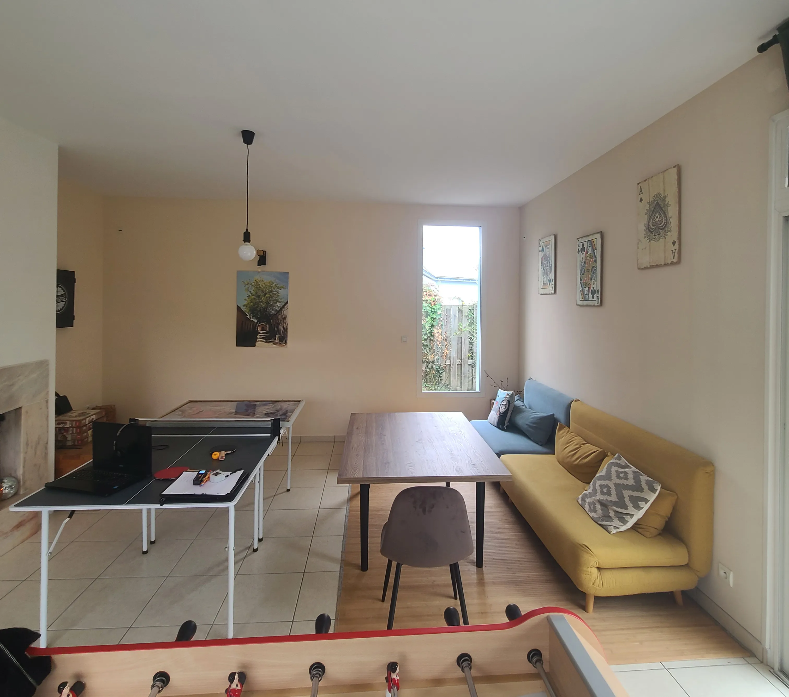
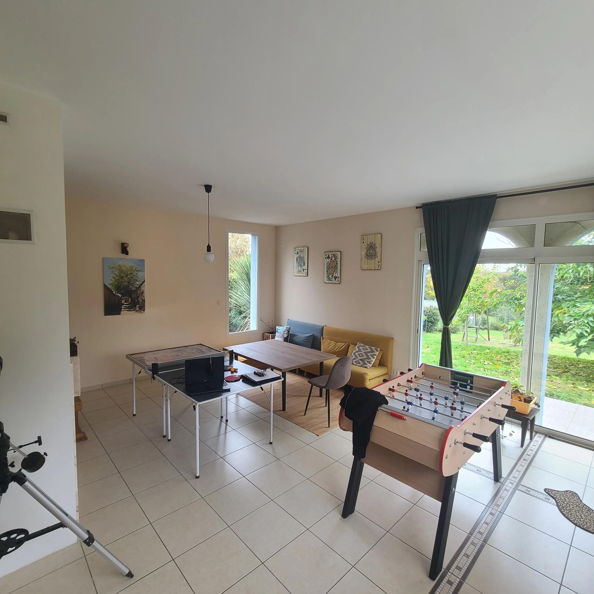

Depuis plusieurs années, cette famille localisée à Saint Nicolas de Redon, vivait dans une maison agréable mais au quotidien, quelque chose ne prenait pas.
L’espace manquait de chaleur, d’intention. Les souvenirs de voyage étaient là, posés comme des fragments isolés, sans lien entre eux. Rien ne racontait vraiment leur histoire ou ne venait structurer les usages.
Ils avaient envie de mieux, de se sentir chez eux, de retrouver du plaisir à habiter cet espace, à s’y poser, à y jouer et y vivre pleinement.


Nous avons travaillé la couleur pour créer des zones de vie lisibles, installer des contrastes, apporter de la profondeur et sortir de cette sensation de vide uniforme. Chaque teinte, chaque matière est venue dialoguer avec les objets existants pour leur redonner du sens.
J’ai également conçu des solutions d’agencement sur mesure, pensées pour accompagner leurs usages du quotidien : jouer, recevoir, se retrouver. Des rangements intégrés qui libèrent l’espace tout en le structurant.
Aujourd’hui, la pièce a changé de posture. Elle n’est plus seulement utilisée, elle est habitée. Elle invite à rester, à partager, à recommencer une partie, encore et encore. Et surtout, elle leur ressemble enfin.
échanger sur mon projet

Chaque projet résout un problème différent